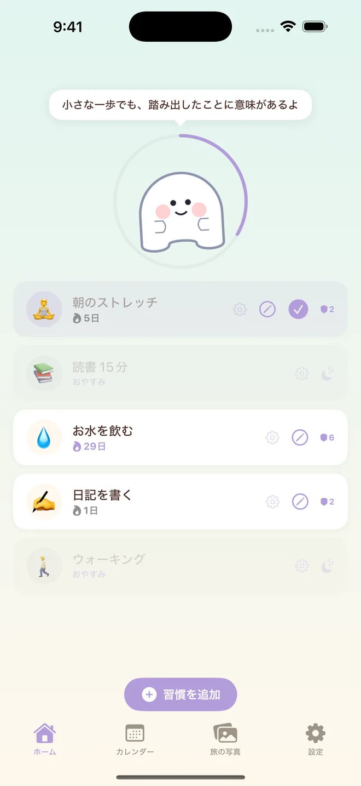
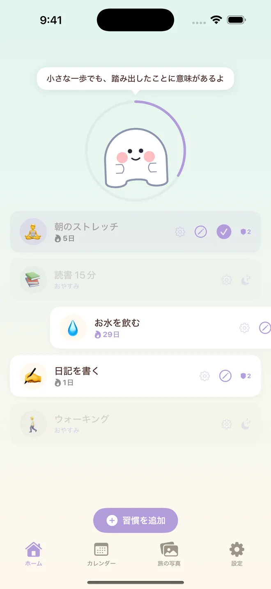
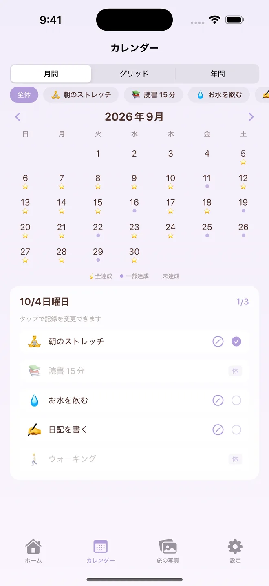

今日のまるっと、なんかツイてる気がする！根拠はない！
おしゃべりな相棒と、楽しい習慣づくり。
毎日の習慣を、
冒険に変えよう。
おしゃべりな相棒「まるっと」が、今日のあなたにひとこと。
「できた！」をほめて、時にはくすっと笑わせてくれる。
1日の習慣をすべて達成したら、旅の写真を1枚。
会うのも、集めるのも楽しみな習慣づくりを。
iPhone・iPad対応 / 無料・広告あり / アカウント登録不要
まるっとって？
250種類の旅の写真


今日のまるっと、なんかツイてる気がする！根拠はない！
250集めたくなる旅の写真
✓ひとスワイプで達成を記録
FREE無料・アカウント登録不要
MEET YOUR CHATTY LITTLE COMPANION
おしゃべりな相棒が、
毎日の楽しみに。
ほめる。励ます。時々、ちょっと笑わせる。習慣の妖精「まるっと」は、あなたの小さな一歩を見守る、おしゃべり好きな相棒です。今日はどんなことを話してくれるかな？
わぁ！読書やったんだね！まるっと感激！
休むのは悪いことじゃないよ。まるっとが保証する！
富士山のてっぺんに雲がのっかってて、ぼくも帽子ほしくなっちゃった

気になる場面をタップして、まるっとのおしゃべりをのぞいてみよう。
アプリ内のおしゃべりの一例です。
会うたび、ひとこと。
時間帯や季節に合わせたあいさつ。何気ないつぶやきに、くすっとすることも。
できた！を一緒に喜ぶ。
小さな達成にも、まるっとからのほめ言葉。次の一歩が、ちょっと楽しみに。
お休みの日も、あなたの味方。
うまくいかなかった日には、やさしい励まし。自分のペースで、また始めよう。
01 — LITTLE BY LITTLE
続けたくなる理由が、
ここにある。
達成したら、ほめてもらえる。1日の習慣を全部できたら、旅の写真が届く。毎日の小さな一歩に、楽しみが待っている。
01

A SMALL STEP FORWARD
できた！を、
ひとスワイプ。
できた習慣をスワイプで達成に。達成の取り消しや、カレンダーから過去の記録を変更することもできます。
タップして、今日の「できた！」を体験
サイト上の体験デモ
がんばった日も、うまくできなかった日も、まるっとがあなたを応援します。
02

02 — A WORLD OF LITTLE REWARDS
いつもの毎日から、
まだ見ぬ世界へ。
250✦
種類の旅の写真


習慣を続けて、旅の写真をコレクション
1日の習慣をすべて達成すると旅の写真が1枚もらえます。250種類の写真と、まるっとの旅行日記や豆知識を楽しみましょう。動画広告でボーナス写真を受け取ることもできます。
写真と旅行日記を共有
お気に入りの写真を拡大して、共有ボタンから写真と日記を共有できます。アプリのリンクと #MaruttoTracker も一緒に添えられます。
03 — AT YOUR OWN PACE
暮らしに合うから、続けられる。
あなたの生活リズムに合わせて
習慣を行う曜日、リマインダー、1日の区切り時間を設定できます。ホーム画面のウィジェットでも今日の達成状況を確認できます。
連続記録を盾でサポート
7日続けると盾を獲得できます。うっかり忘れた日に連続記録を守ってくれる機能は、設定でオン・オフを切り替えられます。
18の言語・地域設定に対応
画面やまるっとの台詞、旅行日記まで、お好みの言語で楽しめます。
無料で使えますか？
無料でダウンロードして使えます。アプリ内には広告があり、追加の旅の写真を受け取るための動画広告もあります。
アカウント登録は必要ですか？
アカウント登録は不要です。習慣の記録は端末に保存されます。iOS 17以降のiPhone・iPadに対応しています。